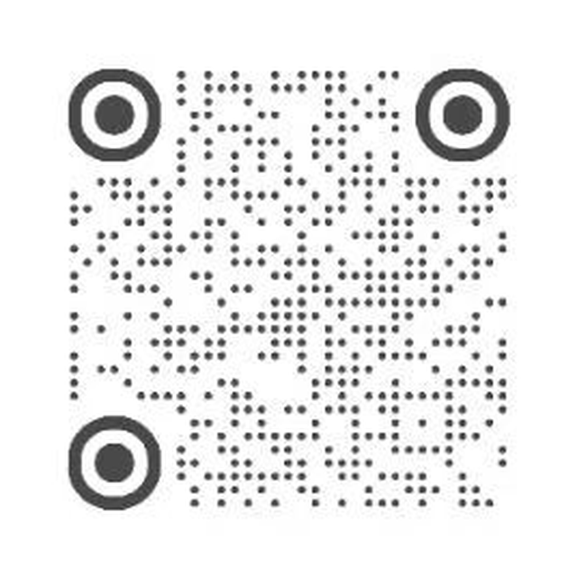

WECHAT OFFICIAL ACCOUNT
微信公众号
Kun1983
ID
gh_208227c20fcc
PC GEEK / SONY ENTHUSIAST / MUSIC
一个围绕 PC 折腾的人，
对声音有自己的判断。
02
FIND ME ONLINE
关于设备、折腾，以及值得反复听的声音。
欢迎来玩。
Kun1983
gh_208227c20fcc
Kun1983
893815528

扫码关注，或复制账号 ID 在平台内搜索。
想聊 PC DIY、SONY 或音乐，
欢迎在微信公众号或小红书找到我。